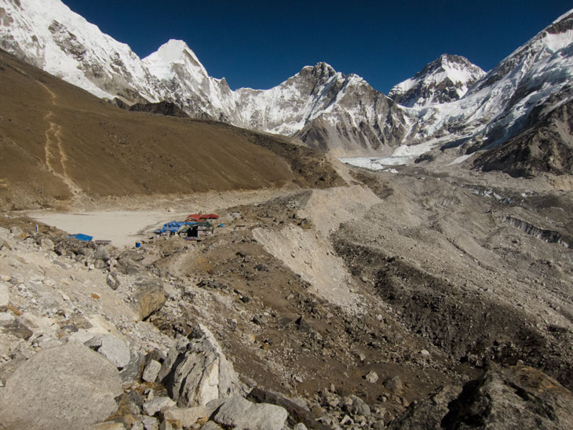
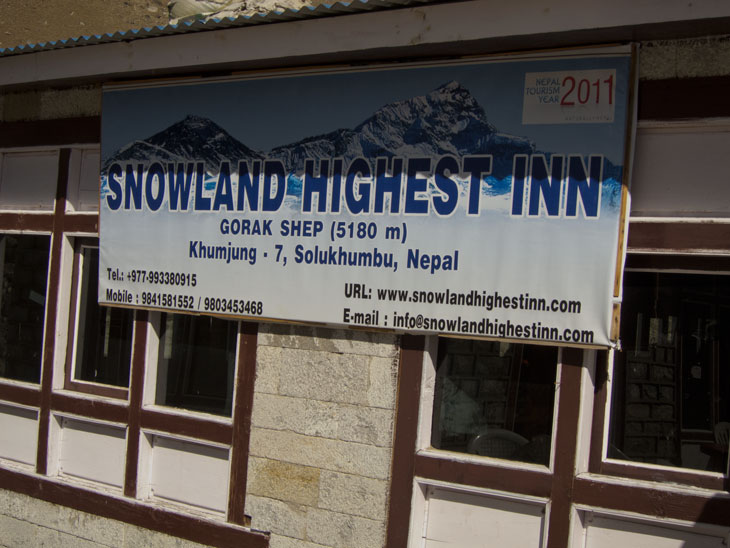
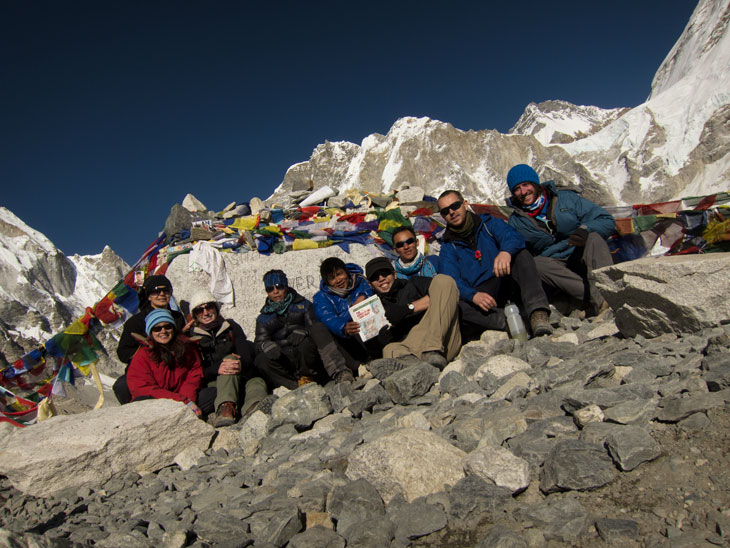

Wednesday 23rd November 
Today, we had to get up 4am to set off from Thukla at 5am. This was to be one of those days which would start off freezing with us wearing every stitch of clothing we had.
I wasn’t going to waste today by spending it with a headache, so I decided to go on Diamox. I did wonder if I could manage without it - the headache wasn’t crippling, but I think I’d rather enjoy the day than whatever achievement I’d feel I’d gain by not using it.
Today was going to be the longest day so far - we’d be walking to our next stop, Gorak Shep (5180m), then past and onto Basecamp, then turn around back to the lodge. 
We walked 8 hours to Gorak Shep and carried on for another 3 hours to Everest Basecamp (5364m). We made it … we had all made it!
I made the mistake of running the last few metres to the rock for dramatic effect and it took me a good few minutes to recover - don’t doubt the thin air out there! 
The whole area was a desolate expanse of rock. There was nothing to break up the bleak landscape of grey and besides the few of us taking photos and surveying the mountains, there was not another soul in sight. The Khumbu Icefall was easy to spot from where we were, but Everest itself was hidden behind the other peaks.
After photos, and graffiting the base camp rock, we headed back to the teahouse for celebratory Diamox and garlic soup.